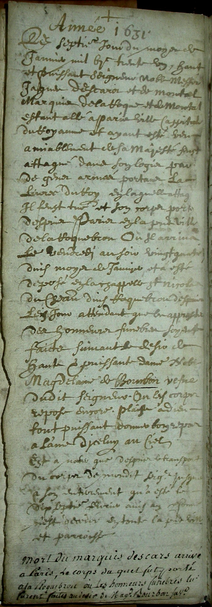
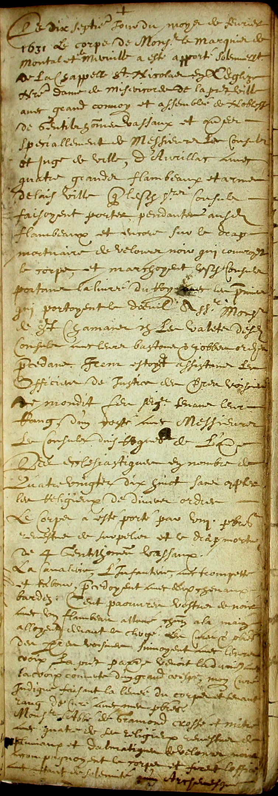
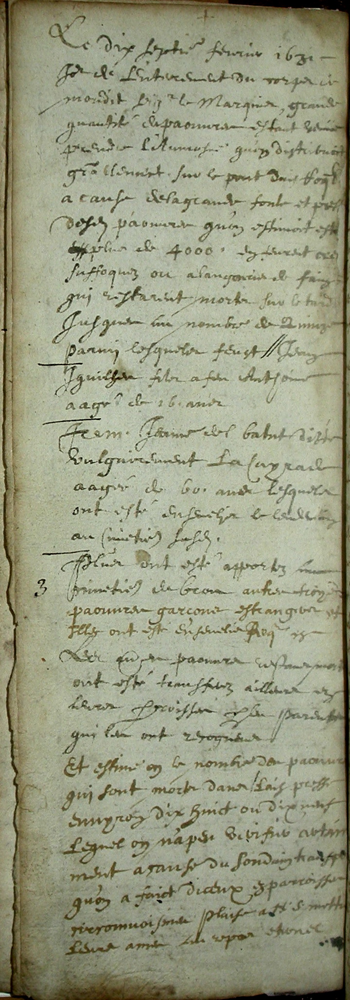

Funérailles de Jacques D'Escars
Acte de sépulture rédigé par Pierre Savy, curé de l'église Nôtre Dame de Miséricorde de Laroquebrou, relatant la mort de Jacques d'Escars et ses funérailles en 1631 :



Acte de sépulture rédigé par Pierre Savy, curé de l'église Nôtre Dame de Miséricorde de Laroquebrou, relatant la mort de Jacques d'Escars et ses funérailles en 1631 :


